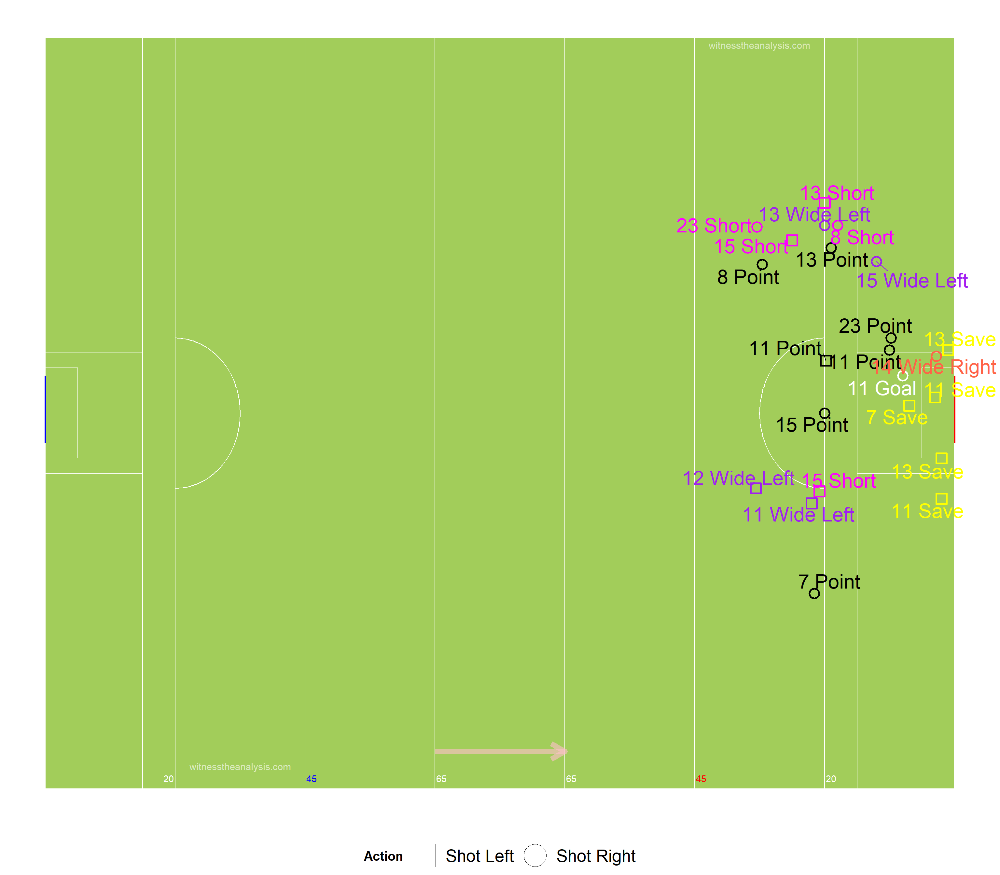
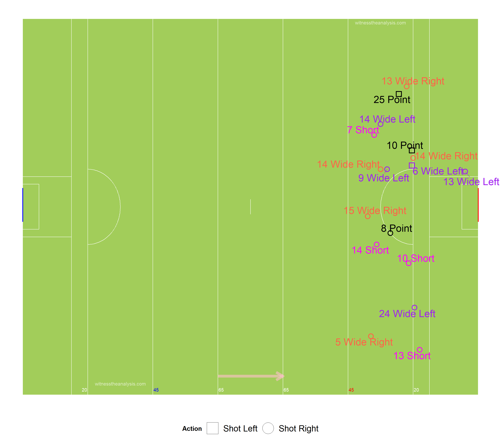
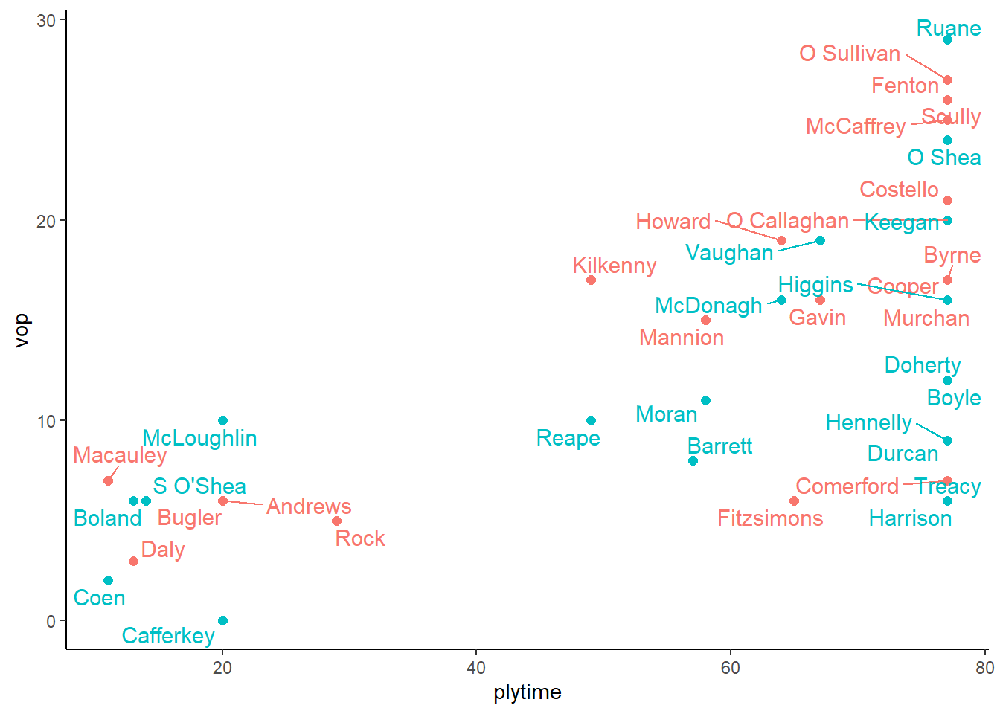

Dublin (1.12) vs Mayo (0.07)
NFL Division 1
Croke Park
23/02/2019
#Summary
| Dublin.1.12. | Mayo.0.07. |
|---|---|
| McCaffrey (0-01) | Hennelly (0-02, 0-01f, 0-01 45) |
| Fenton (0-01) | Ruane (0-01) |
| O’Callaghan (0-01) | Fionn McDonagh (0-01) |
| Mannion (0-02, 0-01f) | Doherty (0-02, 0-02f) |
| Kilkenny (0-01) | McLoughlin (0-01) |
| Costello (1-04, 0-02f) | |
| Rock (0-02, 0-01m, 0-01f) |
| Team | Poss | Phase | All.Shots | All.Scores | Shots.PerPoss | Scores.PP | Shots.Op | Scores.Op | Score.Eff.. | Op.Scores.PP |
|---|---|---|---|---|---|---|---|---|---|---|
| Dublin | 51 | 71 | 33 | 13 | 65% | 25% | 24 | 8 | 33% | 16% |
| Mayo | 52 | 75 | 25 | 7 | 48% | 13% | 17 | 3 | 18% | 6% |
| Ko | Ko Won | Ko % | To Won | Frees For | Scoreable | Score | Fk Score% | Pass | Hand Pass | Kick Pass |
| 21 | 18 | 86% | 28 | 17 | 6 | 4 | 67% | 275 | 199 | 61 |
| 21 | 18 | 86% | 28 | 20 | 6 | 3 | 50% | 215 | 167 | 30 |
#Starting Line Up ##Dublin
##Mayo
#Scoring Timeline
#Score Differential 
#Average Position by Touch ##Dublin
##Mayo
#Areas of Play by Touch ##Dublin
##Mayo
#Path of Possession ##Dublin
##Mayo
#All Shots Origin by Possession ##Dublin (Blue = Score)
##Mayo (Blue = Score)
#Open Play Shot Origin by Phase ##Dublin (Blue = Score)
##Mayo (Blue = Score)
#Open Play Shots - Location & Outcome
##Dublin

##Mayo

#All Shots - Location & Outcome ##Dublin
##Mayo
#Kick Outs
##Dublin
##Mayo
#Turn overs/Possession Won ##Dublin
##Mayo
#Frees Won ##Dublin
##Mayo 
#Frees Loss ##Dublin
##Mayo
#Passing ##All Passes - Dublin
##All Passes - Mayo
#Attacking Passes ##Dublin
##Mayo
#Pass Network ##Dublin
###In Degree (Number of Players a Player Received a Pass from)
## McCaffrey O Sullivan Fenton Costello Scully O Callaghan Byrne Howard Cooper Mannion Kilkenny Murchan Gavin Bugler
## 15 14 13 13 11 11 10 10 9 9 9 8 6 6
## Macauley Fitzsimons Andrews Daly Rock Comerford
## 5 4 4 4 3 2###Out Degree (Number of Players a Player Made a Pass to)
## O Sullivan McCaffrey Scully Murchan Fenton Gavin Costello Howard Byrne Cooper O Callaghan Kilkenny Mannion Macauley
## 14 13 12 11 11 11 11 10 9 9 9 8 7 7
## Andrews Bugler Comerford Daly Fitzsimons Rock
## 5 5 4 4 3 3###Strength in (Number of Passes Received by a Player)
## O Sullivan Fenton Scully McCaffrey Costello O Callaghan Kilkenny Howard Byrne Cooper Mannion Murchan Gavin Bugler
## 23 21 21 20 19 18 16 15 14 14 14 12 12 6
## Macauley Andrews Fitzsimons Rock Daly Comerford
## 6 5 4 4 4 2###Strength Out (Number of Passes/Shots Made by a Player)
## O Sullivan Fenton McCaffrey Scully Gavin Byrne Murchan Howard Cooper Kilkenny Costello O Callaghan Mannion Comerford
## 26 23 22 19 17 16 16 15 14 13 12 11 8 7
## Macauley Fitzsimons Bugler Andrews Daly Rock
## 7 6 6 5 4 3###Betweenness Centrality (Flow of Passes through a Player)
## O Sullivan Fenton McCaffrey Costello Murchan Scully Byrne Bugler Howard Cooper O Callaghan Macauley Mannion Andrews
## 0.084719149 0.068963390 0.067663225 0.040979333 0.033852251 0.033436935 0.019953871 0.019323139 0.018928734 0.017824775 0.012424133 0.012166703 0.009563081 0.003750298
## Gavin Kilkenny Daly Rock Comerford Fitzsimons
## 0.002841087 0.001410098 0.001371338 0.001120858 0.000000000 0.000000000###Closeness Centrality (How Well connected and central a Player is within the Teams Network)
## O Sullivan McCaffrey Fenton Murchan Costello Scully Byrne Howard O Callaghan Gavin Cooper Mannion Kilkenny Macauley
## 0.9500000 0.8636364 0.8636364 0.8260870 0.8260870 0.8260870 0.7600000 0.7600000 0.7600000 0.7307692 0.7037037 0.7037037 0.7037037 0.6785714
## Bugler Andrews Daly Comerford Fitzsimons Rock
## 0.6333333 0.6129032 0.6129032 0.5757576 0.5757576 0.5757576###Entropy (The Unpredictability in who a Player Passes to/Takes shot)
## Daly Macauley Bugler Andrews Rock Howard Costello Fenton Mannion Fitzsimons Cooper McCaffrey Murchan O Sullivan
## 1.0000000 0.9892973 0.9881091 0.9848587 0.9755038 0.9752733 0.9714106 0.9713093 0.9699160 0.9695704 0.9686382 0.9680493 0.9676665 0.9662533
## Scully Kilkenny O Callaghan Gavin Byrne Comerford
## 0.9635537 0.9627974 0.9623482 0.9605647 0.9587983 0.9359447###Global clustering coefficient (Groups of Players who pass to each other)
## [1] 0.7124431###eigen_centrality (How well connected the well connected are)
## O Sullivan Fenton McCaffrey Scully Kilkenny Howard Gavin O Callaghan Costello Byrne Cooper Murchan Mannion Fitzsimons
## 1.0000000 0.9399711 0.9073754 0.8810905 0.7158631 0.7037386 0.6996138 0.6910054 0.6855745 0.6813865 0.6704015 0.6306798 0.5042172 0.2462604
## Comerford Macauley Daly Bugler Rock Andrews
## 0.2412955 0.2321574 0.1867660 0.1618267 0.1576844 0.1553922##Mayo
###In Degree (Number of Players a Player Received a Pass from)
## Ruane Keegan O Shea Vaughan McDonagh Moran McLoughlin Boyle Reape Doherty Higgins Durcan Barrett S O'Shea Boland
## 12 11 11 9 9 8 8 7 7 7 6 5 5 5 5
## Harrison Treacy Hennelly Coen Cafferkey
## 4 4 2 2 0###Out Degree (Number of Players a Player Made a Pass to)
## Keegan O Shea Higgins Ruane Vaughan Boyle McDonagh Doherty McLoughlin Durcan Hennelly Barrett Harrison Moran Reape
## 12 12 11 11 11 9 8 7 7 6 5 5 4 4 4
## S O'Shea Boland Treacy Cafferkey Coen
## 4 4 3 0 0###Strength in (Number of Passes Received by a Player)
## Ruane O Shea Keegan Vaughan McDonagh Boyle Reape Higgins Moran Doherty McLoughlin Barrett Treacy Durcan S O'Shea
## 25 23 15 13 12 11 10 9 9 9 9 7 6 5 5
## Boland Hennelly Harrison Coen Cafferkey
## 5 4 4 2 0###Strength Out (Number of Passes/Shots Made by a Player)
## Ruane Keegan O Shea Higgins Vaughan Boyle McDonagh McLoughlin Doherty Hennelly Durcan Harrison Barrett S O'Shea Treacy
## 25 21 21 16 14 11 10 9 8 7 7 6 6 6 4
## Moran Reape Boland Cafferkey Coen
## 4 4 4 0 0###Betweenness Centrality (Flow of Passes through a Player)
## Keegan O Shea McDonagh Ruane Doherty Vaughan Higgins Boyle Reape Moran Harrison McLoughlin Durcan Boland
## 0.072775584 0.071978979 0.066095373 0.057383779 0.049101289 0.038760833 0.035609436 0.016702531 0.016518358 0.014673257 0.008676996 0.007983342 0.006683375 0.005565682
## Hennelly S O'Shea Barrett Treacy Cafferkey Coen
## 0.003458140 0.003262787 0.003049290 0.001253133 0.000000000 0.000000000###Closeness Centrality (How Well connected and central a Player is within the Teams Network)
## Ruane Keegan O Shea Vaughan McDonagh Higgins Doherty Boyle Moran McLoughlin Reape Barrett Boland S O'Shea Durcan
## 0.4750000 0.4634146 0.4634146 0.4418605 0.4418605 0.4318182 0.4318182 0.4222222 0.4130435 0.4130435 0.4042553 0.4042553 0.3958333 0.3877551 0.3800000
## Harrison Treacy Hennelly Coen Cafferkey
## 0.3725490 0.3725490 0.3653846 0.3275862 0.0500000###Entropy (The Unpredictability in who a Player Passes to/Takes shot)
## Boland Coen Moran Durcan McLoughlin S O'Shea Barrett Ruane Treacy Doherty Vaughan Higgins McDonagh Reape Boyle
## 1.0000000 1.0000000 0.9892973 0.9881091 0.9820064 0.9766147 0.9750064 0.9695853 0.9695704 0.9692074 0.9672654 0.9647709 0.9630081 0.9611009 0.9557670
## Harrison Hennelly O Shea Keegan
## 0.9488131 0.9487695 0.9348829 0.9324795###Global clustering coefficient (Groups of Players who pass to each other)
## [1] 0.6627907###eigen_centrality (How well connected the well connected are)
## Ruane O Shea Keegan Vaughan Boyle Higgins McDonagh McLoughlin Doherty Reape Barrett S O'Shea Moran Durcan
## 1.000000000 0.984832160 0.803337244 0.614405606 0.546432853 0.514193495 0.494160280 0.427957932 0.375376327 0.307006686 0.303568160 0.287970099 0.278924671 0.262569087
## Harrison Hennelly Treacy Boland Coen Cafferkey
## 0.258678902 0.230159498 0.221375019 0.179438249 0.032712689 0.009729457#Total Touches by Player ##Dublin
##Mayo
##Touches Per Playing Time

##Open Play Shots vs Play Time
##Open Play Scores vs Play Time 
##Open Play Shots vs Open Play Score